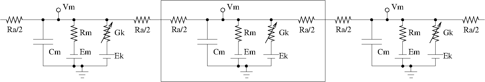

Neuronal simulations in MOOSEGUI
Table of Contents
1 Introduction
Neuronal models in various formats can be loaded and simulated in the MOOSE Graphical User Interface. The GUI displays the neurons in 3D, and allows visual selection and editing of neuronal properties. Plotting and visualization of activity proceeds concurrently with the simulation. Support for creating and editing channels, morphology and networks is planned for the future.
2 Neuronal models
Neurons are modelled as equivalent electrical circuits. The morphology of a neuron can be broken into isopotential compartments connected by axial resistances Ra denoting the cytoplasmic resistance. In each compartment, the neuronal membrane is represented as a capacitance Cm with a shunt leak resistance Rm. Electrochemical gradient (due to ion pumps) across the leaky membrane causes a voltage drive Em, that hyperpolarizes the inside of the cell membrane compared to the outside.
Each voltage dependent ion channel, present on the membrane, is modelled as a voltage dependent conductance Gk with gating kinetics, in series with an electrochemical voltage drive (battery) Ek, across the membrane capacitance Cm, as in the figure below.

compartments in a neuron
Neurons fire action potentials / spikes (sharp rise and fall of membrane potential Vm) due to voltage dependent channels. These result in opening of excitatory / inhibitory synaptic channels (conductances with batteries, similar to voltage gated channels) on other connected neurons in the network.
MOOSE can handle large networks of detailed neurons, each with complicated channel dynamics. Further, MOOSE can integrate chemical signalling with electrical activity. Presently, creating and simulating these requires pyMOOSE scripting, but these will be incorporated into the GUI in the future.
To understand channel kinetics and neuronal action potentials, run the Squid Axon demo installed along with MOOSEGUI and consult its help/tutorial.
Read more about compartmental modelling in the first few chapters of the Book of Genesis.
Models can be defined in NeuroML, an XML format which is mostly supported across simulators. Channels, neuronal morphology (compartments), and networks can be specified using various levels of NeuroML, namely ChannelML, MorphML and NetworkML. Importing of cell models in the GENESIS .p format is supported for backwards compatibitility.
3 Neuronal simulations in MOOSEGUI
3.1 Quick start
- On first run, the MOOSEGUI creates moose/Demos directory in user's home folder. A few neuronal models are provided in directories inside moose/Demos/neuroml. For example, File->Load moose/Demos/neuroml/CA1PyramidalCell/CA1.net.xml, which is a model of hippocampal CA1 pyramidal cell Migliore et al, 2005 (exported using neuroConstruct). A 3D rendering of the neuron appears in GL Window tab.
- Use click and drag to rotate, scroll wheel to zoom, and arrow keys to pan the 3D rendering.
- Click to select a compartment on the 3D model, say the fattest cylinder near the center which is the soma / cell body. You may need to zoom/pan a bit.
- Its Properties (which you can modify) will appear on the right pane.
- Further, in Plot configuration in the right pane, Plot field Vm will be selected by default. Click New plot tab to create a blank plot and Add field to assign Vm of this compartment to the plot.
- Run the model using Run button. By default, the model contains a current injection in the soma, which causes action potentials that decay into the dendrites.
- You can switch between plot tabs and colour-coded 3D vizualization of spiking in the GL Window tab.
- Manipulate and save plots using the icons at the bottom of the Plot Window.
User interface help is available at Help->User Interface. Here we delve into neuronal simulations.
3.2 Modelling details
MOOSE uses SI units throughout.
Some salient properties of neuronal building blocks in MOOSE are described below. Variables that are updated at every simulation time step are are listed dynamical. Rest are parameters.
- Compartment
-
When you select a compartment, you can view and
edit its properties in the right pane. Vm and
Im are plot-able.
- Vm
- dynamical membrane potential (across Cm) in Volts.
- Cm
- membrane capacitance in Farads.
- Em
- membrane leak potential in Volts due to the electrochemical gradient setup by ion pumps.
- Im
- dynamical current in Amperes across the membrane via leak resistance Rm.
- inject
- current in Amperes injected externally into the compartment.
- initVm
- initial Vm in Volts.
- Rm
- membrane leak resistance in Ohms due to leaky channels.
- diameter
- diameter of the compartment in metres.
- length
- length of the compartment in metres.
- HHChannel
-
After selecting a compartment, you can click See children on the right pane to list its membrane
channels, etc. Presently all channels are Hodgkin-Huxley
channels with voltage dependent dynamical gates.
- Gbar
- peak channel conductance in Siemens.
- Ek
- reversal potential of the channel, due to electrochemical gradient of the ion(s) it allows.
- Gk
- dynamical conductance of the channel in Siemens. Gk(t) = Gbar × X(t)Xpower × Y(t)Ypower × Z(t)Zpower.
- Ik
- dynamical current through the channel into the neuron in Amperes. Ik(t) = Gk(t) × (Ek-Vm(t))
- X,Y,Z
- dynamical gating variables (range 0 to 1) that may turn on or off as voltage increases with different time constants. dX(t)/dt = Xinf/τ - X(t)/τ. Here, Xinf and τ are typically sigmoidal/linear/linear-sigmoidal functions of membrane potential Vm, which are described in a ChannelML file and presently not editable from MOOSEGUI. Thus, a gate may open (Xinf(Vm) → 1) or close (Xinf(Vm) → 0) on increasing Vm, with time constant τ(Vm).
- Xpower,Ypower,Zpower
- powers to which gates are raised in the Gk(t) formula above.
3.3 Demos:
- Cerebellar granule cell
- to add
- Purkinje cell
- to add
- Olfactory bulb subnetwork
- to add
Date: 2012-09-28 18:05:15 IST
HTML generated by org-mode 6.33x in emacs 23